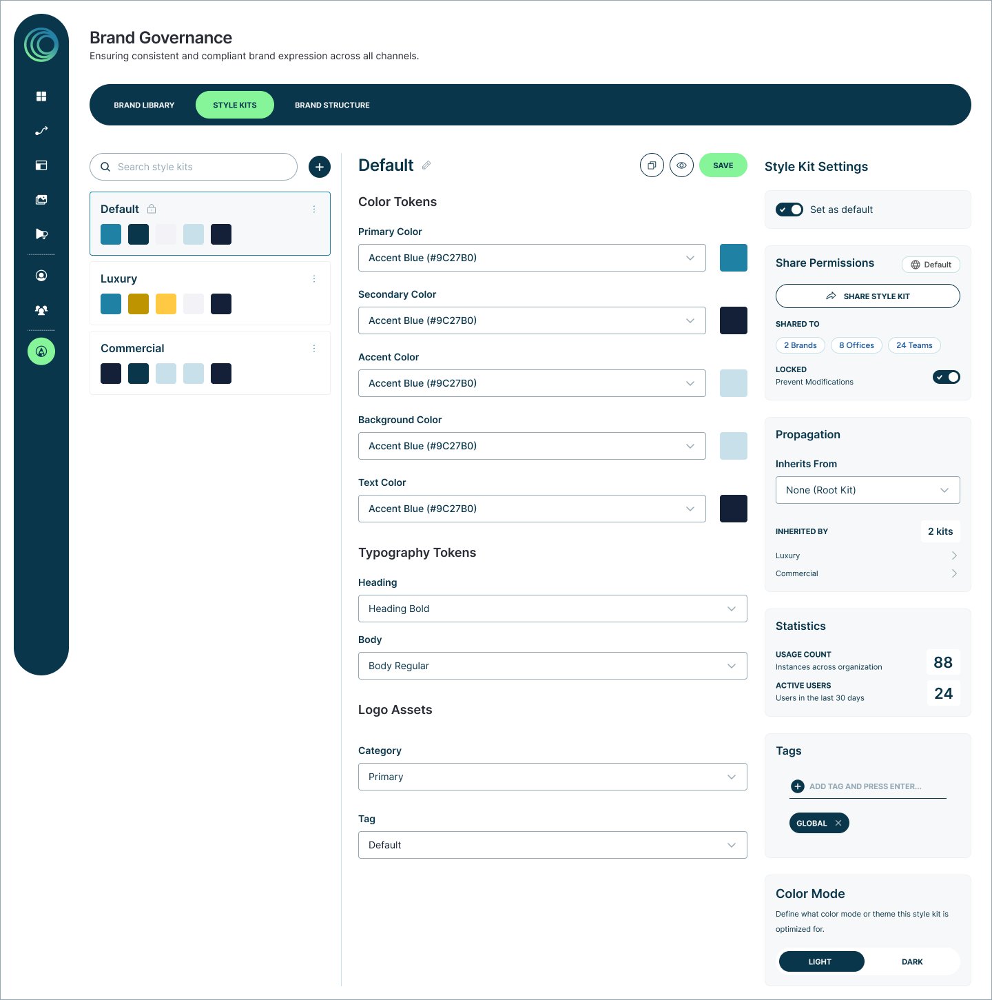
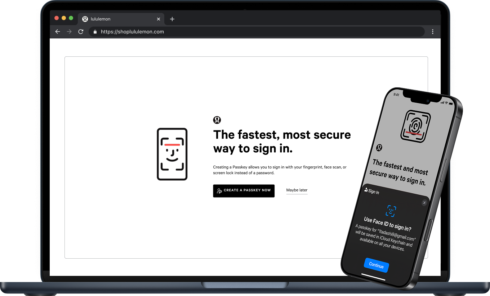
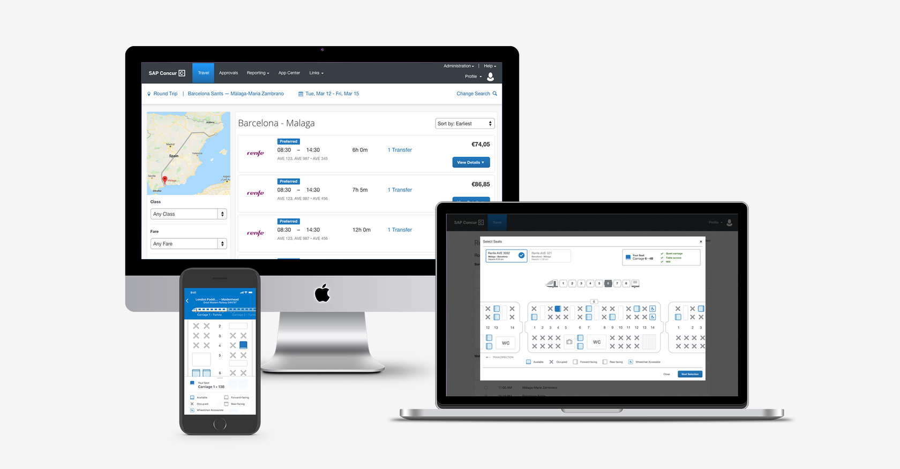

Senior Product Designer — Vancouver, BC
Complexity is inevitable.Confusion isn’t.
Nobody should need a manual for the tools they use every day. I design so they don’t — for teams at MoxiWorks, lululemon, and SAP Concur.
View selected workWhat I Do
For teams at MoxiWorks, lululemon, and SAP Concur, I’ve designed through three recurring kinds of complexity.
Organizational
Systems too big for any one person to hold in their head.
Behavioral
Asking people to trust something unfamiliar.
Interaction
Dense interfaces where every detail competes for attention.
The case studies below take one each.
Case Studies
Designing Brand Governance for Enterprise Scale
How do you help thousands of agents stay on brand without relying on manual processes?
View case study
Designing a Passwordless Authentication Experience
How do you convince people to trust a sign-in method they’ve never used before?
View case study
Designing an Accessible Rail Booking Experience
How do you simplify one of the most information-dense experiences in travel?
View case study
How I Work
Good software doesn’t become simpler by removing complexity. It becomes better by organizing complexity into systems people can understand.
Systems thinking
Organizing complexity into structures people can understand, not hiding it.
Close collaboration
Working in lockstep with Product and Engineering from problem to ship.
Rapid exploration
More directions, earlier — prototyping in hours what used to take days, then throwing most of it away on purpose.
Continuous validation
Testing decisions with real customers and iterating on what they reveal.
The result is software people trust on the first try and rely on every day after.
I’m Tad Natsuhara, a Senior Product Designer based in Vancouver. I enjoy solving the kinds of product problems that don’t have obvious answers.
I work closest to the hard middle of products — where the system design, the interaction details, and the business logic all have to agree. Most days that means whiteboards with engineers and calls with customers.
Also shipped work at Microsoft (6 inventor patents), Electronic Arts, and SAP Jam.